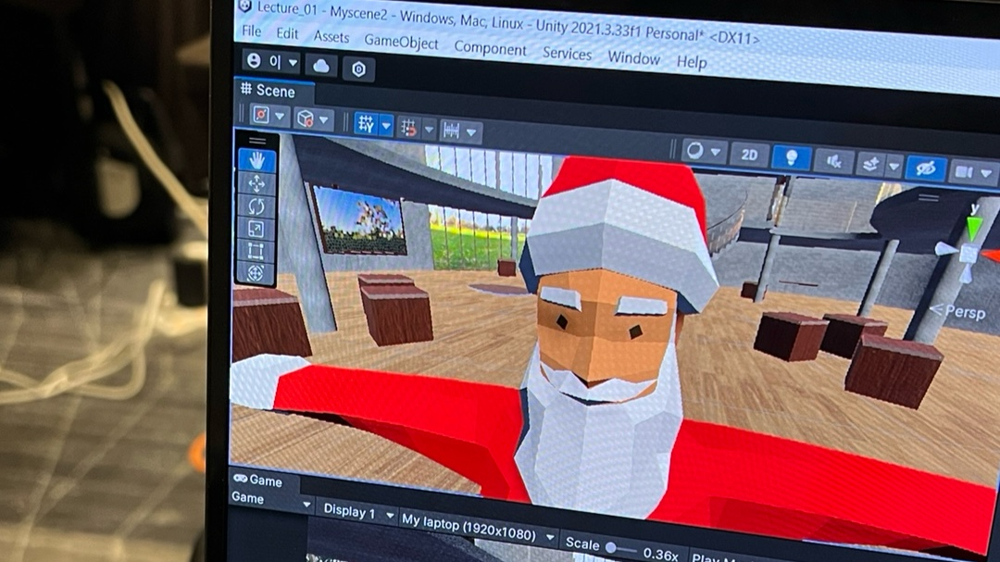
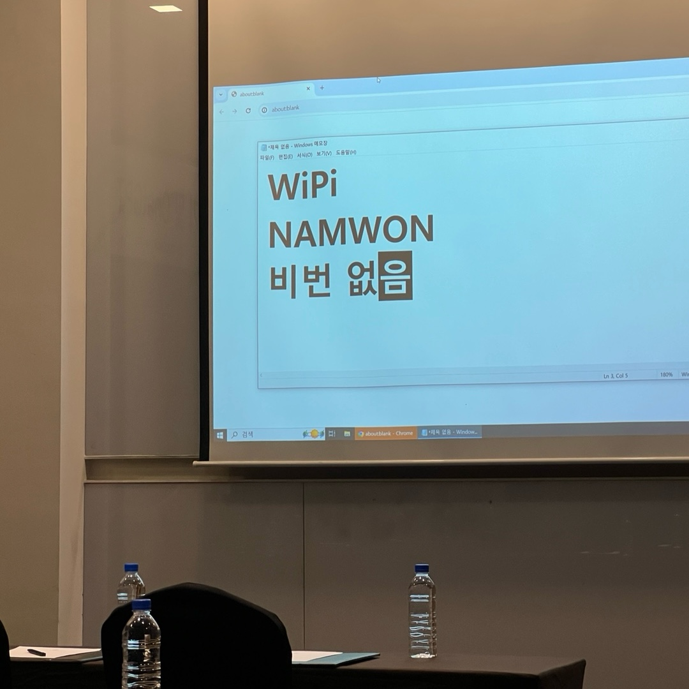
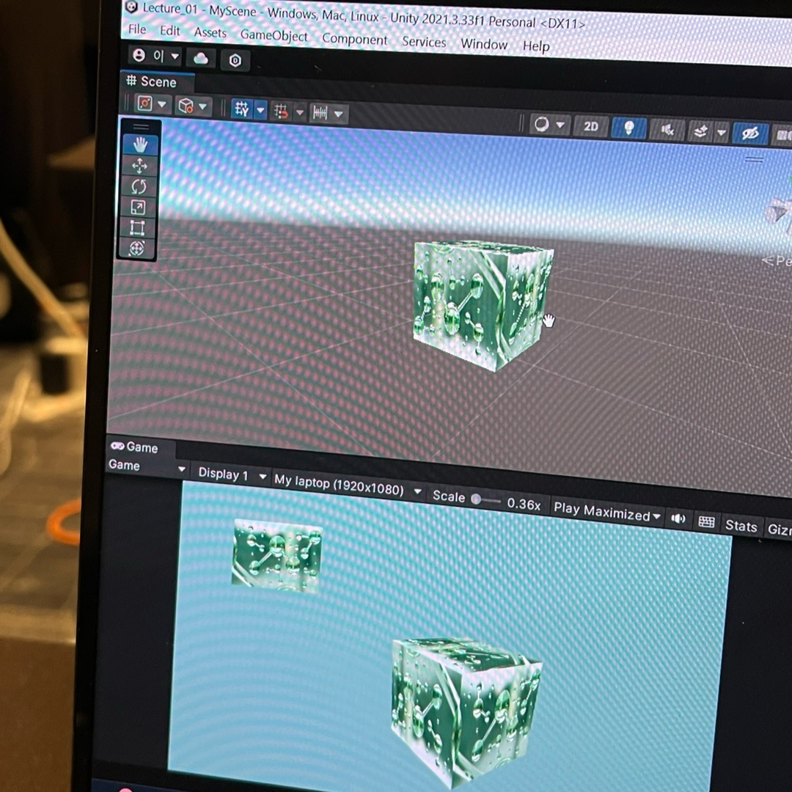
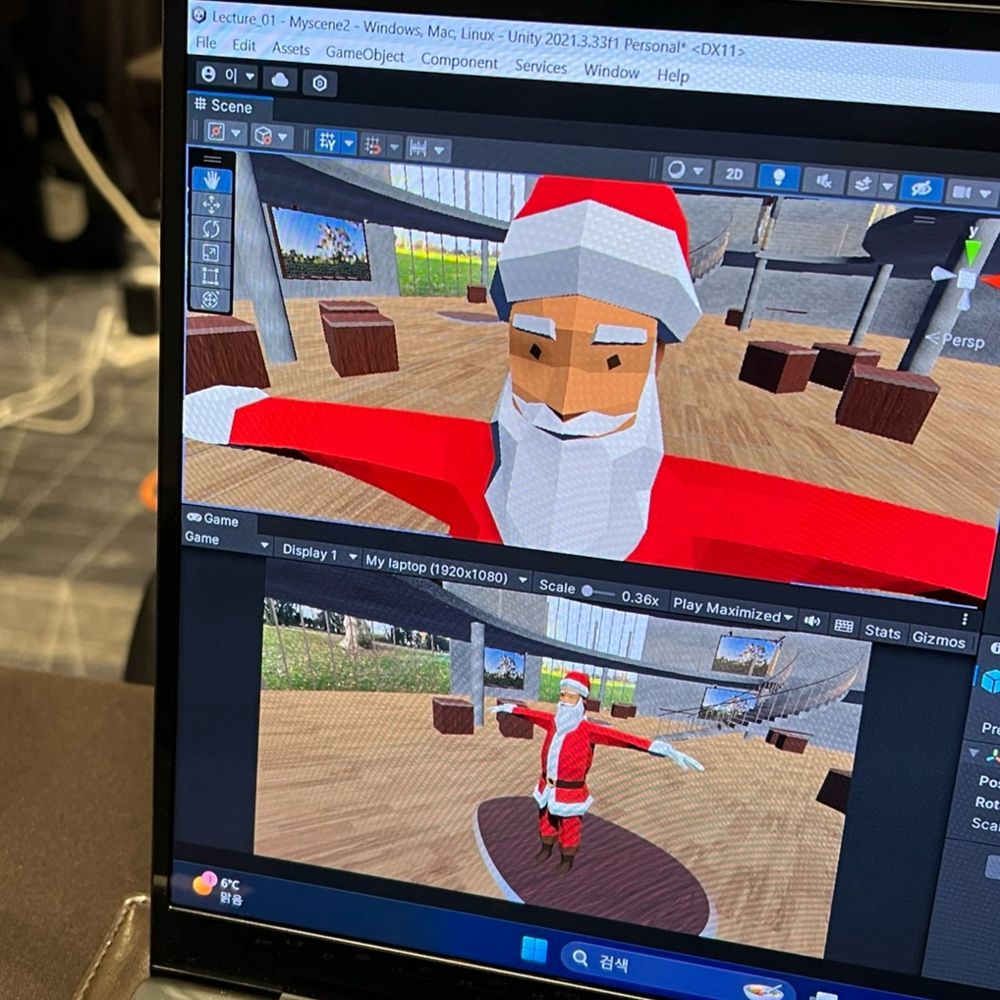
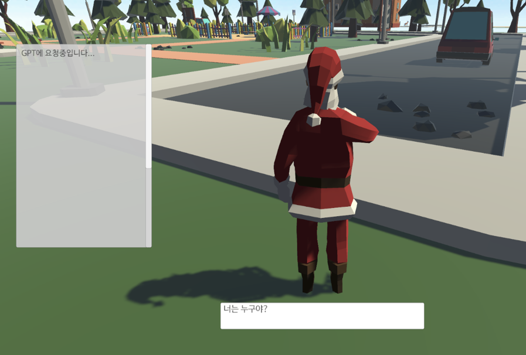
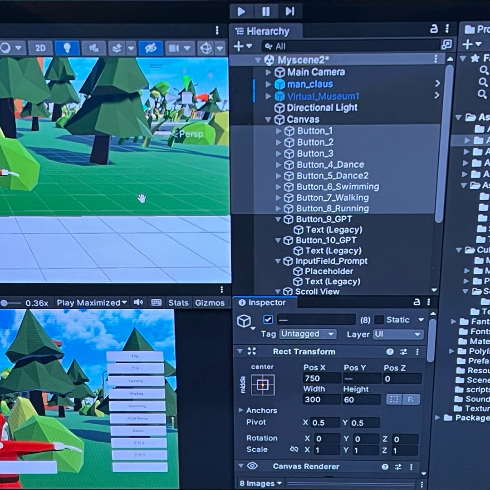

< 1일차 >
오늘은 프로그램 1일차이다.
학교에서 담당 선생님 차를 타고 12시 40분쯤 남원 호텔에 도착했다.
도착하자마자 숙소에 짐을 두고, 점심을 먹었다.
다 먹고 1시부터 2시까지 수강생 등록 및 개회사를 진행했다.
개회사가 끝나고 스크린에 와이파이 비밀번호를 띄워주셨는데 와이파이를 WiPi로 적어주셨...
친구랑 나는 어이가 없어서 막 웃다가 이 프로그램에 대한 의심을 품게 되었다..ㅋㅋㅋㅋ
본격적인 수업에 들어가기 전에 VR 안경 만들기 체험을 했다.
처음엔 유치하다고 생각했는데 현실은 엄청 열심히 만들어서 정말 롤러코스트 타는 기분 든다고 신나한 나.

VR 안경 만들기 체험이 끝나고, 본격적인 수업을 진행하기 위해 유니티를 깔았다.
유니티를 설치하고 기초 조작 방법 및 명령어들을 배웠다.
Project 창, Hierarchy 창, Scene 창, Inspector 창 등등 아주 다양해서 처음엔 많이 헷갈렸다.
다음으론 3D 오브젝트를 추가하고 스크립트를 통해 오브젝트를 제어해봤다.
또, 유니티 에셋스토어에서 다양한 3D 에셋들을 추가해보는데 되게 재밌었다.
오늘은 정말 유니티의 기본적인 요소들을 다루는 실습을 진행했다.
처음이라 많이 서툴었지만 친구랑 머리 맞대고 풀기도하고 강사님께 질문도 마구 해서 해결할 수 있었다.

< 2일차 >
2일차의 수업은 어제의 수업 내용을 복습하면서 시작됐다.
그리고 유니티 에셋스토어에서 캐릭터 모델을 다운 받아서 만들어뒀던 3D 환경에 넣어보았다.
생성한 캐릭터 모델을 움직이게하기 위한 스크립트도 수업에 따라서 열심히 작성해보았다.
그 결과 화살표를 눌러서 캐릭터를 움직일 수 있게 되었다.
이 이후엔 함수형 챗봇을 구현해보는 실습을 진행했다.
또한, 가상 소재 전문가용 챗봇 환경 개발 프로젝트를 진행하기 위해
유니티 UI 명령어를 실습하였다.

기본적인 UI 설계 방법을 배우고, 이번 교육의 하이라이트인 ChatGPT API 연동하기를 진행했다.
우선 ChatGPT API를 사용하기 위해 OpenAI에 가입하고 API 키를 발급받았다.
그리고 발급받은 API 키를 유니티에 연동하기 위해 스크립트를 작성했다.
API 키를 연동한 후에는 챗봇과 대화하는 기능을 구현하여 챗봇과 대화할 수 있게 되었다.
약간 아쉬웠던 점은 질문을 던지면 돌아오는 답변의 시간이 꽤나 오래 걸리고,
2023년도 버전의 ChatGPT API를 사용했기 때문에 최근 정보에 대해선 답변하지 못했다.
그래도 신기했고, 내가 직접 막 한 건 없지만 뿌듯하기도 했다.

< 3일차 >
3일차의 수업도 어제의 수업 내용을 복습하면서 시작됐다.
어제는 챗봇과 대화하는 기능까지 구현했기에 TTS와 전송 버튼 UI밖에 없었는데,
오늘은 캐릭터를 다양하게 움직이도록 하는 애니메이션 버튼 UI를 추가했다.
애니메이션은 유니티 에셋스토어에서 다운 받았고, 엄청 다양하게 있어서 뭘 선택할지 고민이 많았다.
나는 걷고 뛰고 수영하고 춤 추는 애니메이션을 선택했다.
선택한 애니메이션을 캐릭터에 적용하고, UI를 통해 애니메이션을 제어하는 스크립트를 작성했다.
그 결과 내가 설정한 UI 버튼을 누르면 버튼에 따라 캐릭터가 움직였다.
오른쪽의 영상은 내가 만든 최종 결과물이다.
화면이 많이 끊기긴 하지만 될 건 다 된다..ㅎ
오늘은 오전에만 수업하고 오후엔 짐 싸서 집에 돌아가기 때문에 금방 끝났다.
그래서 수료증을 다 전달 받고 마지막으로 단체 사진 찍고 숙소로 돌아갔다.